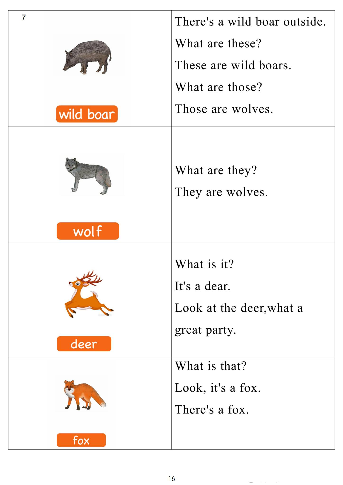

Day 15
Unit 5 · story
教材重点
网盘未提供逐日打卡原图；本级教材文件为“5.第五级单词卡.pdf”，以下重点结合单词卡与台词本整理，原文请看 Part 3。
Unit 5 · story · 7–8岁
can · see · hear · play
Hello, hello, my name's Steve.
台词本为机器转写，可能存在识别误差；不等同于视频逐字原声。
详细内容
Part 1 核心词汇
必须掌握 · 4 个查看橙色每日打卡 Day 15 原图

Part 2 跟读句型与句型拓展
左侧保留台词本原句，右侧为替换练习；拓展内容不是视频逐字台词。
Hello, hello, my name's Steve.
So it's time to play. It's time to play in English.
Touch, taste.
HO, hello, hi me and Maggie are cleaning the house today.
We're starting with the windows, come on, come and have a look hooray.
Part 3 台词本全文
来源：第5级台词本 · 015.Wow!Orange - Unit 5 story_5_1b.pdf。以下保留网盘 PDF 的机器转写文本，仅清理了文件路径页眉和空行。
Hello, hello, my name's Steve.
So it's time to play. It's time to play in English.
Smell.
Touch, taste.
Here C.
HO, hello, hi me and Maggie are cleaning the house today.
We're starting with the windows, come on, come and have a look hooray.
Finished, look, a nice, clean window to see through.
Oh, look at that tree, can you see it? Yeah, you can so say with me.
I can see it, see it, see it, and again, I can see it, see it, see it one more time, I can see it, see it.
See it with my eyes, oh, what a nice clean window.
But hey, maggie, is your window clean? No, and I want to play.
Hi, there, big Stave is boring. HA, but I've got an idea, yeah,
Hi, a smaller safe could be more fun.
Oh hey, baby Steve, let's play.
Oh, oh, no, what are you doing You can't taste the window. I broke it up.
Hey Steve, what are you just cleaning the window, maggie with you want to know that would be crazy.
Maggie, look, there's your teddy bear title of this mess.
HA, HA, yeah, baby Steve.
You can play with my teddy bear. It's soft, too, touch, yeah,
No, hey, hey, don't eat it. No, don't eat it. I'm with an opera.
Doesn't forget taste, taste.
I did con taste it, that would be crazy.
No, I-I just touched it with my fingers, not with my tongue, no, no, sir. Lay.
With a teddy bear, you can play with it and you can touch it with your fingers here, not your tongue.
Now, hey.
Say with me, I can touch it, touch it, touch it again, I can touch it, touch it, touch it one more time. I can
touch it.
Touch it, touch it with my fingers. How taste it? Hey, I can hear.
Music, can you hear the music.
Say with me, I can hear it. Hear it.
/
-
/5/015.Wow!Orange - Unit 5 story_5_1b.txt[2022/3/29
星期二
6:51:49]
Hear it again, I can hear it, hear it, hear it one last time, I can hear it, hear it, hear it.
Getting louder and louder, or it hurts my ears.
But.
Don't snap. I'm breathing, ever come on, baby stay. Yeah.
I have dance.
Oh, I know something. I'm looking up at an old silly station.
Baby.
Question.
Maggie, are you using Maggie magic again and being naughty? Yes. Sorry.
Thank you for the flower, maggie, yeah, hey, look, I've got a flower, and I can smell it.
It smells lovely.
Hey, pretend you can smell it and say with me, I can smell it, smell it, smell it, yeah, again, I can smell it.
Smell it smell it last time I can smell it, smell it, smell it.
Hey, doesn't smell good. No, oh no, maggie, I'm sorry problem. We can still have fun.
I broke the camera.
Let's play, oh yeah, I don't want to taste it. Let's play.
I don't want to taste it, baby Steve, stop it, no, yeah, oh, I break it up now, oh,
So Maggie, does the flower.
Taste good, naughty, baby Steve, come on, let's stop being silly and clean this house.
What a mess. What a Maggie, off you go.
The flower didn't taste good. No.
But now it's snack time, so let's give Big Steve some baby food. HA, HA, A broken opera.
Hey, I'm hungry. What can I have to eat Try some baby food.
Oh,
Oh, oh, maggie, does it taste good, taste good?
Go, no, it doesn't taste good.
Hey, do you want to taste it? Yeah. Taste it. Taste it. Taste it. No.
No, oh, just wait until I catch that naughty, naughty bird. Oh, maggie, maggie,
Hey, fast, a baby's teeth, you can't catch me.